40 mapas visuais que traduzem parábolas, personagens, as Sete Curas e as Cinco Leis do Ouro em uma rota clara e aplicável para organizar sua vida financeira.
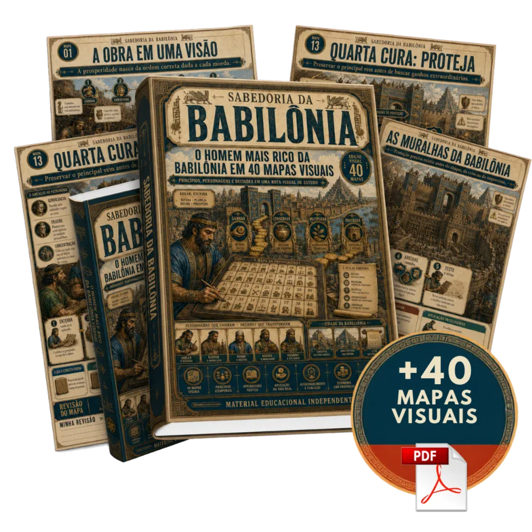
Oferta especial disponível por tempo limitado
Mapas ilustrados, organizados em sequência lógica — da entrada na obra até o domínio completo dos princípios da Babilônia.
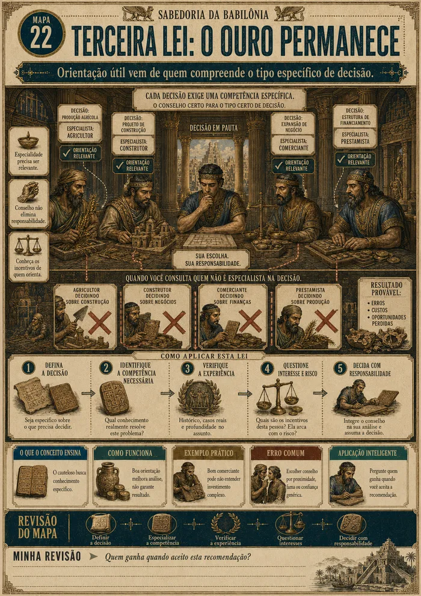
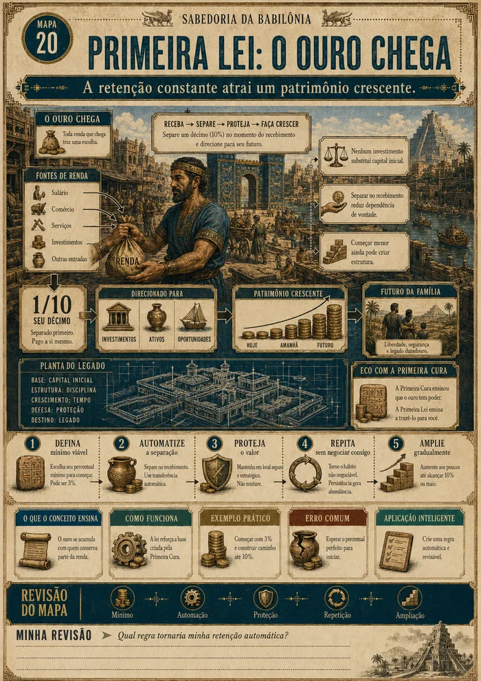
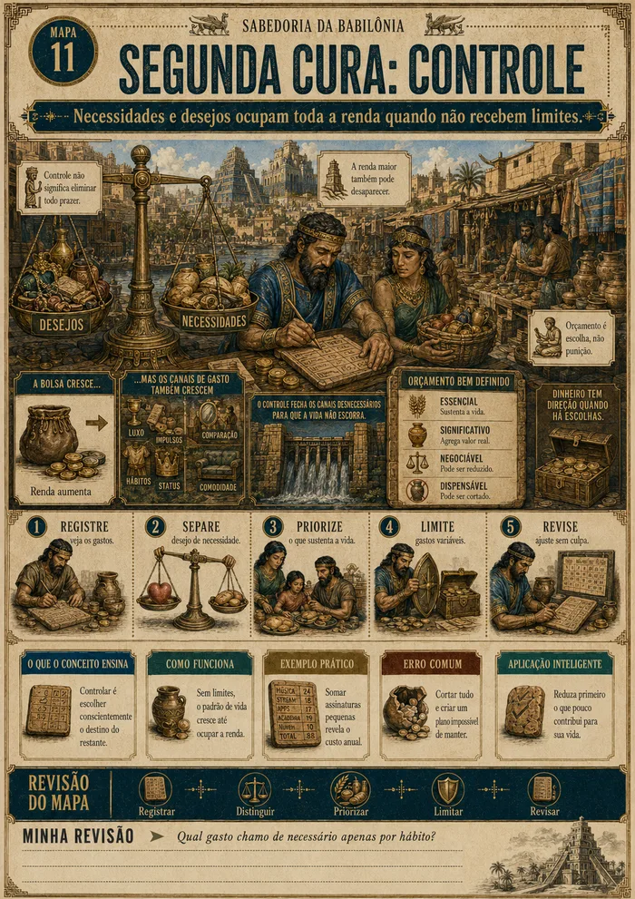
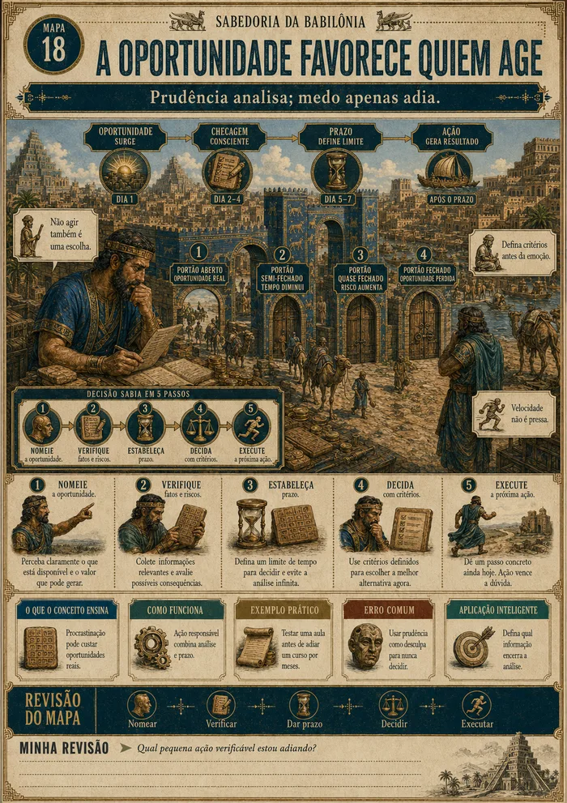
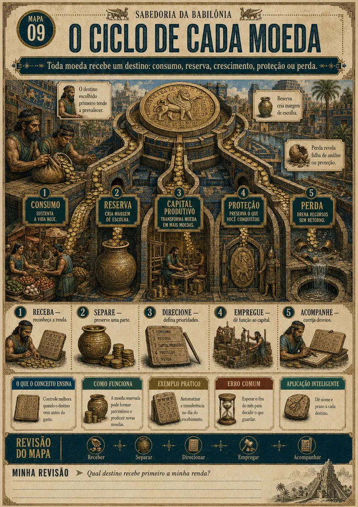
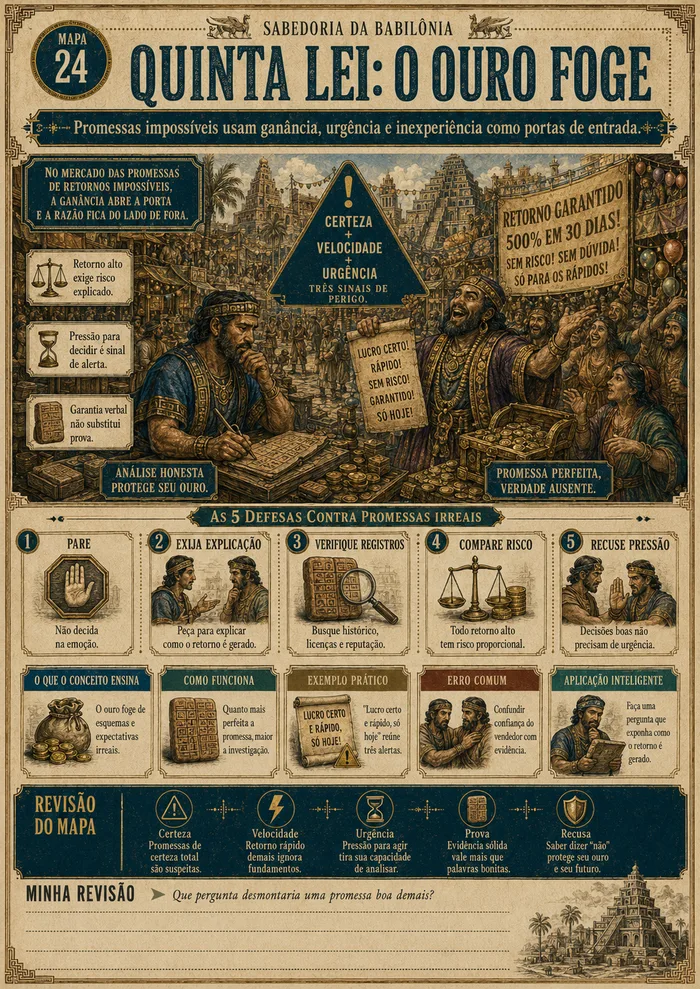
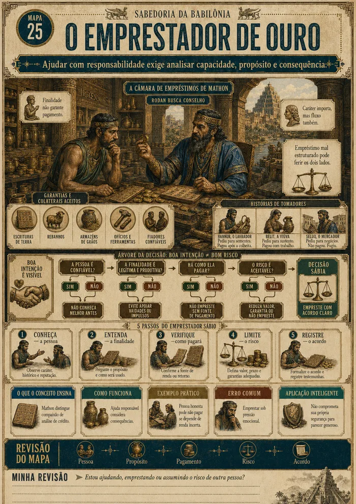
Cada mapa organiza um princípio da obra em um só golpe de vista — sem parágrafos longos nem linguagem técnica para decifrar.
As parábolas de Clason são traduzidas em termos atuais, prontas para orientar suas próprias decisões financeiras hoje.
Cada princípio é conectado a situações reais — dívidas, gastos, investimentos e oportunidades do dia a dia.
As Sete Curas e as Cinco Leis do Ouro continuam atuais porque tratam de desejos permanentes — não de modismos financeiros.
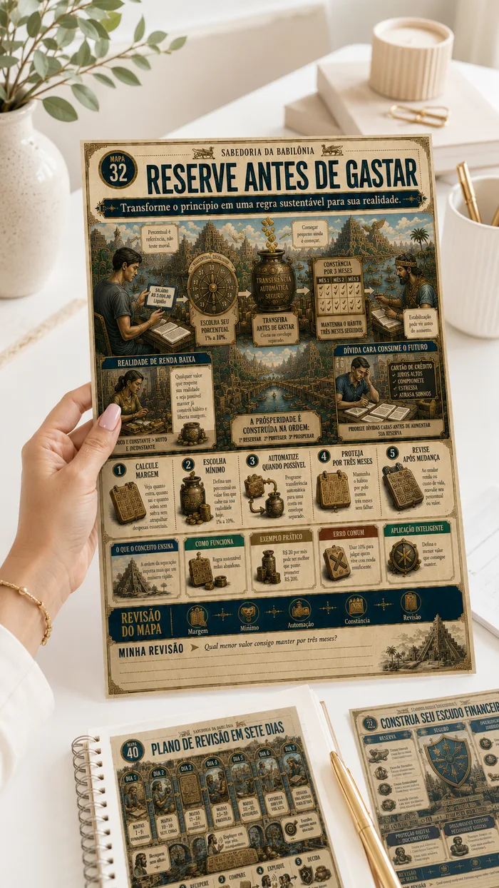
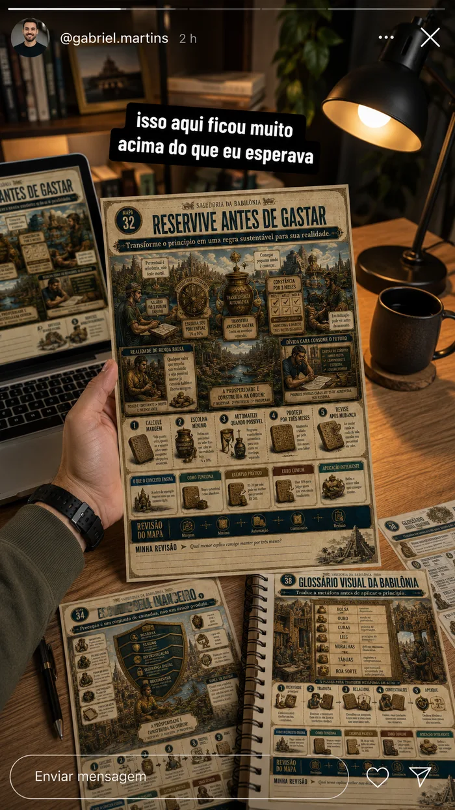
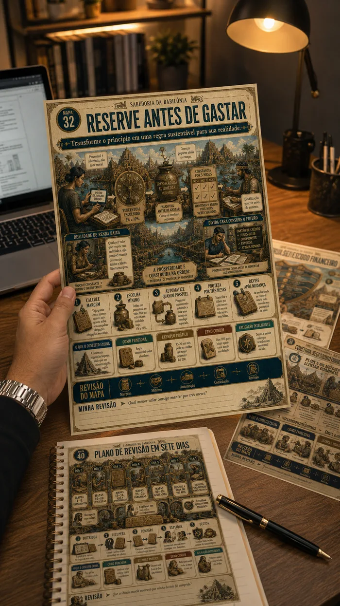
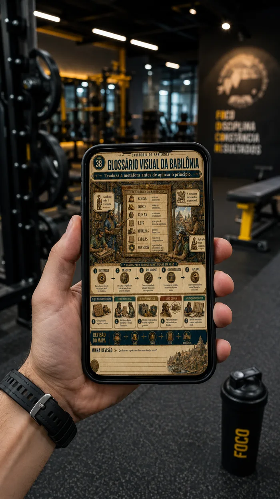
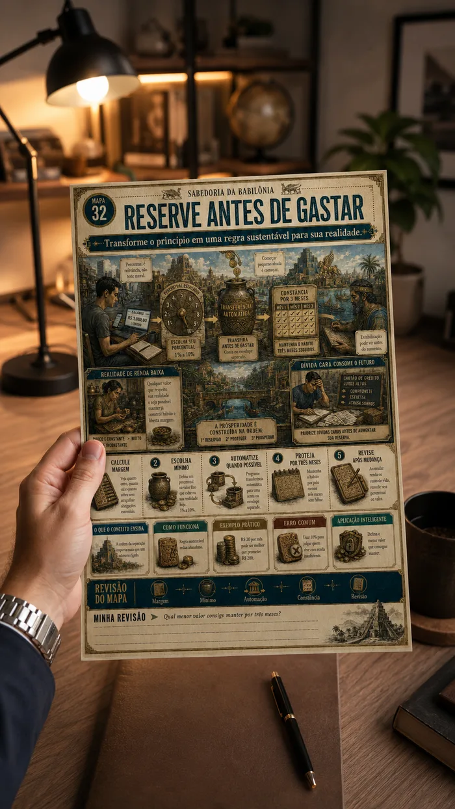
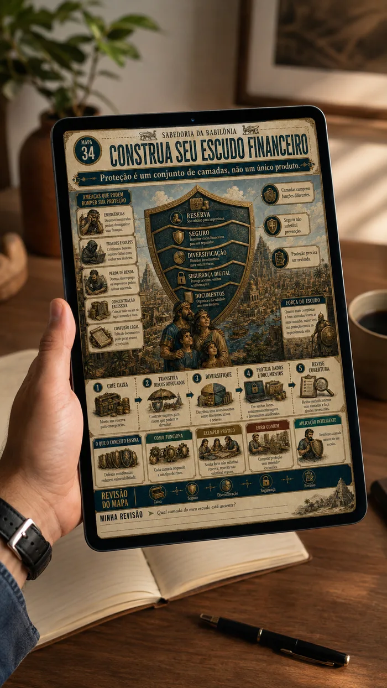
Sem uma sequência clara, esses conselhos continuam soltos. Cada mês que passa sem organização é um mês a mais adiando o patrimônio que você já poderia estar construindo.
Já leu o livro, mas não lembra a sequência das Sete Curas e das Cinco Leis
Quer organizar as finanças, mas se perde entre tantos conselhos diferentes
Prefere aprender de forma visual, sem textos longos ou aulas demoradas
Está começando a sair das dívidas e precisa de um plano simples para seguir
Quer ensinar princípios financeiros sólidos aos filhos ou à família
Busca mais clareza para decidir com segurança e menos impulso
Para quem garantir o acesso hoje, três materiais extras para transformar compreensão em prática.
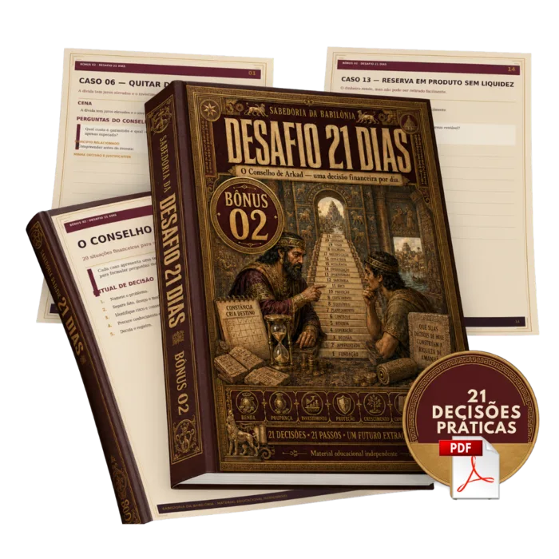
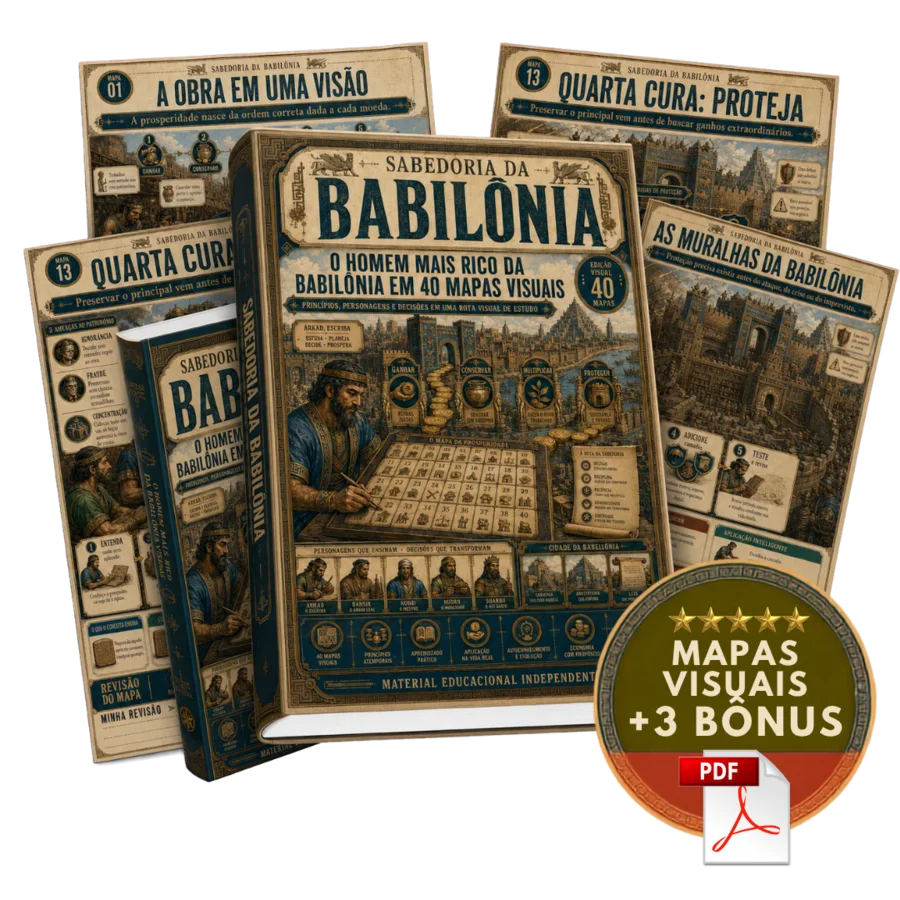
78% das pessoas escolhem o plano completo · Pagamento seguro via Pix ou cartão
Você tem 7 dias corridos após a compra para acessar todos os mapas e bônus. Se sentir que o material não é para você, basta enviar um e-mail e devolvemos 100% do valor pago.
Sem burocracia, sem perguntas difíceis. O risco é todo nosso.
Não. Os mapas foram escritos com linguagem própria e podem ser seu primeiro contato com os princípios da obra.
Não. Os mapas organizam e traduzem os princípios centrais da obra, mas não substituem a leitura completa de "O Homem Mais Rico da Babilônia".
Não. Todo o conteúdo foi redigido originalmente, sem copiar capítulos ou reproduzir longas citações da obra.
O Plano Básico inclui os 40 mapas visuais. O Plano Completo inclui os 40 mapas mais os 3 bônus: Diário das Moedas, O Conselho de Arkad e 50 Perguntas da Sabedoria Financeira.
Em aproximadamente uma hora de revisão visual você já constrói uma visão organizada da obra. Os bônus podem ser usados ao longo de 30 dias, no seu ritmo.
Não. A proposta é oferecer compreensão, organização financeira e clareza para decisões — não uma promessa de enriquecimento ou retorno garantido.
O acesso é liberado imediatamente após a confirmação do pagamento, com link de download enviado por e-mail.
Em arquivos PDF de alta resolução, prontos para consulta no celular, tablet ou computador, e também para impressão.
Sim. Você tem 7 dias corridos para solicitar reembolso integral, sem burocracia.
Não. A Babilônia é tratada como cenário narrativo, assim como na obra original — o foco do material são os princípios financeiros ensinados por meio das parábolas.